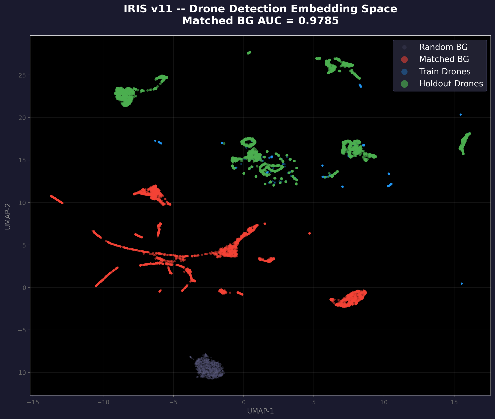
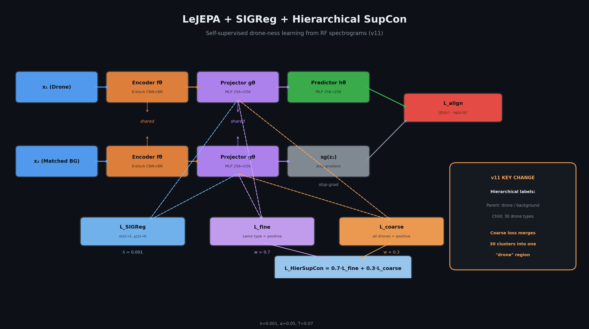
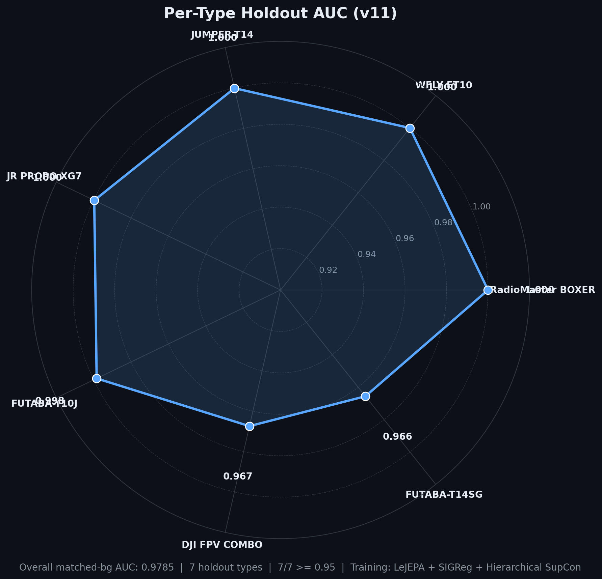
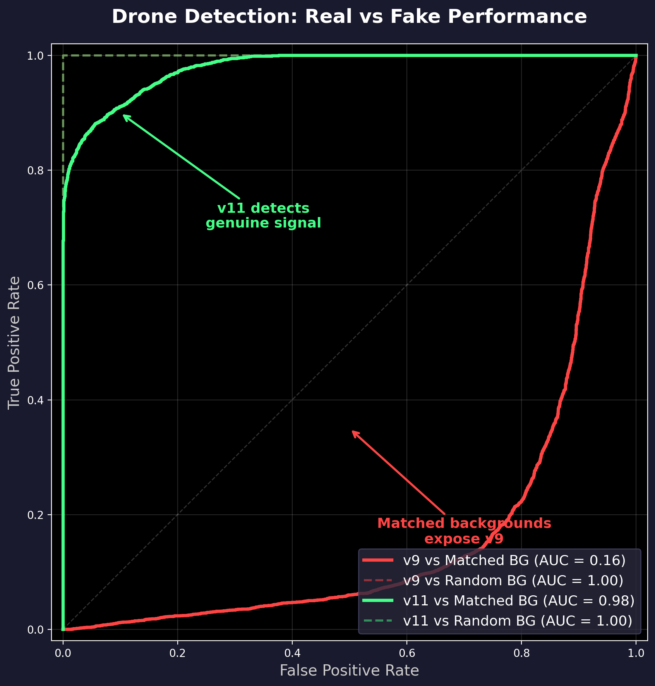
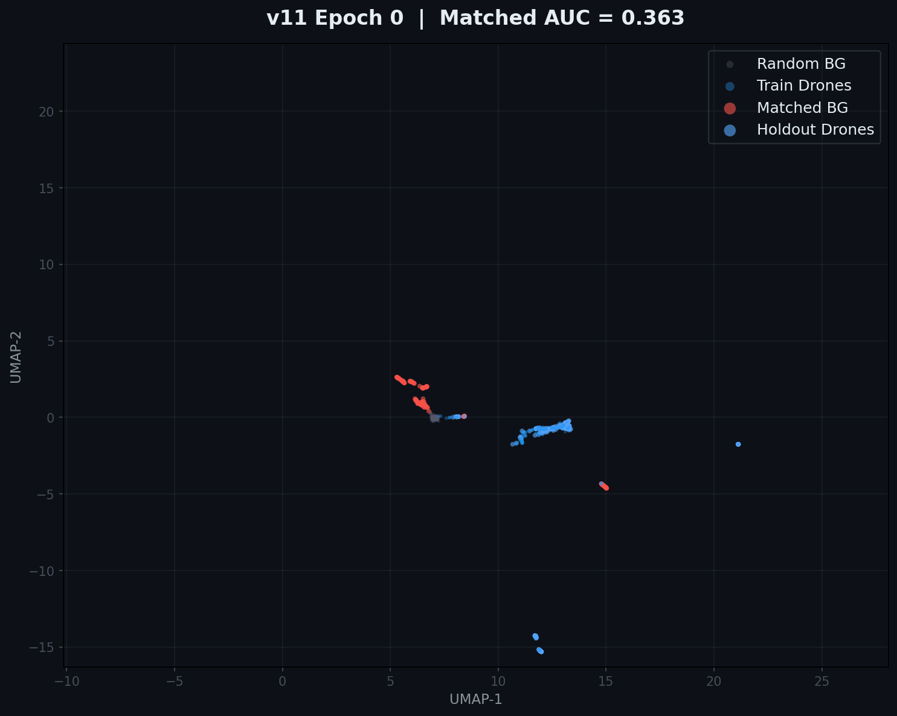
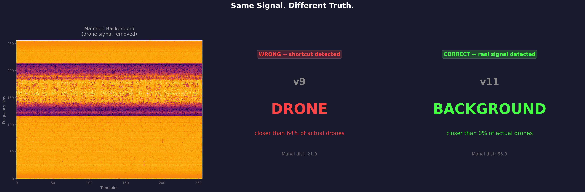
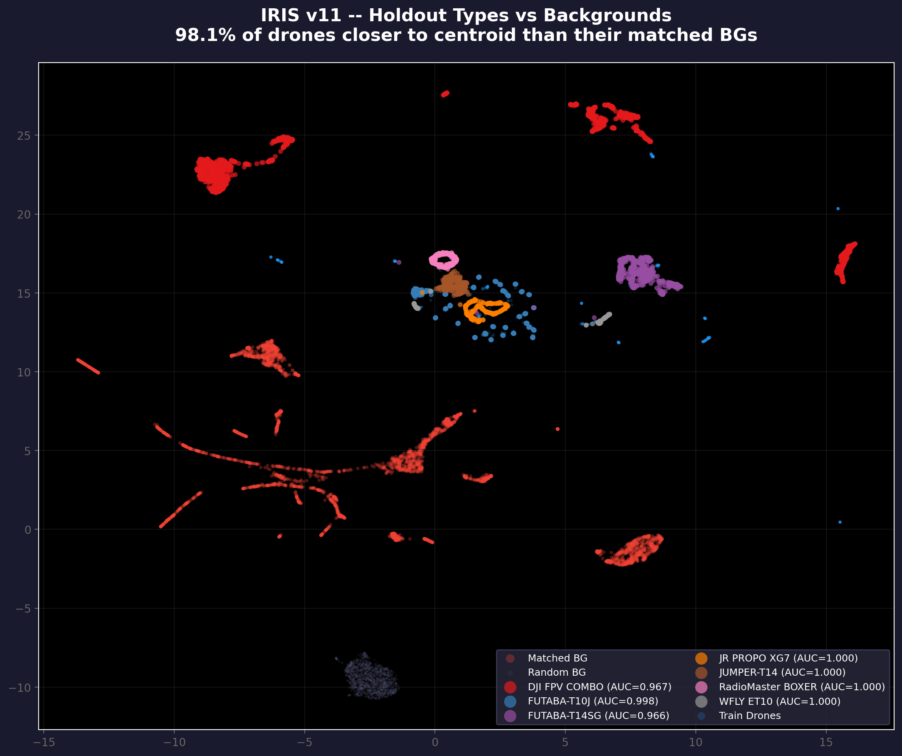

Drone-ness is Learnable: Self-Supervised RF Signal Detection with One Centroid and One Threshold
Drones are everywhere. From consumer quadcopters buzzing over parks to commercial delivery vehicles crisscrossing urban airspace, unmanned aerial systems have become ubiquitous. And with their proliferation comes a growing security challenge: how do you detect a drone that shouldn't be there? Airports, prisons, military installations, critical infrastructure, they all need reliable drone detection, and they need it to work against drone types they've never seen before.
The standard approach is deceptively simple: collect RF signals from known drones, label them, train a classifier, and deploy. It works, until a new drone controller appears on the market. Then your supervised classifier fails silently, outputting confidence scores that look reasonable but are completely wrong. You'd need to collect new labeled data, retrain, and redeploy. This cycle doesn't scale to the hundreds of drone types currently available, let alone the new ones released every month.
So I asked a different question: Can I learn "drone-ness" without labels? Is there something in the RF spectrum that all drone controllers share, a latent signal that makes a drone a drone, that a model could discover on its own? No flight-level labels telling us which spectrogram windows contain drones and which contain background noise. No supervised training on drone-vs-background decisions. Just raw RF spectrograms and the hypothesis that drone-ness is real.
The answer, it turns out, is yes. IRIS v11 achieves 0.978 AUC on 7 completely unseen drone types using self-supervised learning. The detection pipeline is almost comically simple: one centroid, one threshold, zero flight labels. Let me walk you through how I got there.

This UMAP projection tells the whole story. After training with hierarchical contrastive learning on 30 drone types, the embedding space separates into two clean regions: a unified drone cluster (colored dots) and a background region (grey). The 7 holdout drone types, never seen during training, fall squarely inside the drone cluster. The model didn't just memorize training types; it discovered the concept of drone-ness.
The Problem: Why Drone Detection is Hard
RF spectrograms are messy. Unlike natural images, where a cat looks like a cat regardless of the camera, RF signals are shaped by the channel they travel through. Background noise varies wildly depending on what other transmitters are active, the physical environment (indoor vs outdoor, urban vs rural), and the specific SDR hardware used for capture. Two spectrograms of the same drone controller recorded in different environments can look completely different, while two spectrograms of different devices on the same RF channel can look suspiciously similar.
The real killer, though, is the matched background problem. In real-world RF monitoring, you don't get clean "pure noise" as your negative class. The RF channel a drone operates on is shared with WiFi, Bluetooth, and countless other signals. When a drone is transmitting on channel X, the background on channel X already contains all that channel noise. So a naive detector might learn to distinguish "signal present on any channel" from "empty channel" , which is trivially easy but completely useless. A meaningful drone detector must distinguish the drone signal from the channel noise it rides on, not from pure silence.
I handle this by synthesizing matched backgrounds: for each drone spectrogram, I create a background that contains the same RF channel noise but with the drone signal surgically removed. This gives us a paired test where the only difference between the positive and negative samples is the presence or absence of the drone signal itself. It's the hardest possible test, and it's the one that matters for real deployment.
New drone types appear constantly. Even if you could label data for every existing type, you can't label data for types that don't exist yet. And supervised classifiers fail on unknown types without warning. This fundamental scalability problem is what drove us toward self-supervised learning.
The labeling problem is more nuanced than it appears. I do have type-level labels, I know which drone controller generated each spectrogram, because that's determined by the data collection protocol. What I don't have, and don't want to pay humans to determine, is flight-level labels: which individual spectrogram windows contain active drone signals versus pure background. Type labels come free; flight labels are expensive. My approach leverages the free labels while avoiding the expensive ones entirely.
The Pipeline: From RF to Detection
The end-to-end pipeline is straightforward. An SDR captures the raw RF signal, which gets converted to a 2-channel I/Q spectrogram (256x256 time-frequency image). A 6-layer CNN encoder maps this spectrogram to a 256-dimensional embedding. At detection time, I compute the Mahalanobis distance from any embedding to a single drone centroid and compare against a threshold. If the distance is below the threshold, I call it a drone. That's it.

Here's what the detection logic looks like in practice:
import numpy as np
from sklearn.metrics import roc_auc_score
def detect_drone(embedding, centroid, cov_inv, threshold):
"""
Zero-shot drone detection via Mahalanobis distance.
Args:
embedding: (D,) embedding vector from the CNN encoder
centroid: (D,) drone centroid computed from training types
cov_inv: (D, D) inverse covariance matrix
threshold: scalar Mahalanobis distance threshold
Returns:
True if embedding is closer to drone centroid than threshold
"""
diff = embedding - centroid
mahal_sq = diff @ cov_inv @ diff
mahal = np.sqrt(max(mahal_sq, 0))
return mahal < threshold # closer to centroid = more likely drone
# Compute centroid from training embeddings (30 drone types)
centroid = train_embeddings.mean(axis=0)
cov = np.cov(train_embeddings.T) + 1e-3 * np.eye(D)
cov_inv = np.linalg.inv(cov)
# Calibrate threshold using Youden's J statistic
threshold = 25.55 # optimal for my validation setThe simplicity is the point. There's no kNN search, no per-type threshold calibration, no cross-validation scheme. One centroid, one threshold. If a new drone type's embeddings fall near the centroid, I detect it. If they don't, I don't. The entire question is whether the self-supervised training produces an embedding space where this works.
LeJEPA: Learning Without Labels
LeJEPA (Latent Embedding Joint-Embedding Predictive Architecture) is the backbone representation learner. If you're familiar with I-JEPA from Meta's work, the idea is similar: instead of reconstructing pixels (which wastes capacity on low-level noise and texture), LeJEPA predicts in the latent space. I take a drone spectrogram, mask out a chunk of it, and train a predictor to reconstruct the latent representation of the masked region from the visible context.
Why is this better than pixel-level reconstruction for RF signals? RF spectrograms are fundamentally different from natural images. The "pixels" in a spectrogram represent power spectral density across time and frequency, and the meaningful information is in the statistical structure of the signal, modulation patterns, bandwidth, temporal dynamics, not in individual pixel values. A pixel-level loss would force the model to memorize noise patterns, while a latent prediction loss forces it to learn the semantic features that distinguish different types of RF signals.
The architecture has an asymmetric design: an online encoder-predictor branch and a target encoder branch. The target encoder is an exponential moving average of the online encoder, providing stable training targets without gradient flow. The predictor takes the online encoder's representation of the visible context and tries to match the target encoder's representation of the full spectrogram (including the masked region). This prevents representation collapse, a common failure mode in self-supervised learning where all inputs map to the same embedding regardless of content.
Here $q_i$ are the predictor outputs and $\text{sg}(\cdot)$ denotes the stop-gradient operation on the target projector outputs $p_i$. The stop-gradient is critical: it prevents the online branch from simply learning to output a constant, which would trivially minimize the loss while collapsing the representation.
Here's a simplified version of the encoder architecture:
class CNNEncoder(nn.Module):
def __init__(self, in_ch=2, width=64, depth=6, embed_dim=256):
super().__init__()
layers = []
ch = in_ch # 2 channels: I and Q components
for i in range(depth):
out_ch = min(width * (2 ** (i // 2)), 512)
layers.append(ConvBlock(ch, out_ch)) # Conv3x3 -> BN -> GELU -> Conv3x3 -> BN -> GELU
layers.append(nn.MaxPool2d(2))
ch = out_ch
self.conv = nn.Sequential(*layers)
# 256x256 input -> 4x4 spatial after 6 pooling layers
self.head = nn.Sequential(
nn.Flatten(),
nn.Linear(flat_dim, embed_dim),
nn.BatchNorm1d(embed_dim),
)
def forward(self, x):
return self.head(self.conv(x)) # (B, 256)The encoder starts with 2 input channels (I and Q components of the RF signal), processes through 6 convolutional blocks with progressive downsampling, and produces a 256-dimensional embedding. It's deliberately simple, no attention, no residual connections, no bells and whistles. The representation learning comes from the training objective, not the architecture.
SIGReg: Keeping Signal Structure
When you compress a 256x256x2 spectrogram down to a 256-dimensional embedding, it's easy for the model to throw away information. In fact, without any constraint, the LeJEPA alignment loss can push the encoder toward a degenerate solution where it ignores the input entirely and maps everything to the same point. This is representation collapse, and it's the bane of self-supervised learning.
SIGReg (Signal-Integrity Guided Regularization) prevents this by adding a soft constraint: the embedding should preserve spectral coherence. The key idea is that nearby frequency bins in the spectrogram should produce nearby embeddings. I implement this by projecting the embedding through a random matrix $W \in \mathbb{R}^{k \times d}$ (fixed at initialization) and regularizing the variance of each projection to be close to 1.
This acts as an inductive bias tailored to RF signals. Unlike generic variance regularization (which just prevents collapse by ensuring the embedding has non-zero variance), SIGReg ensures that the variance is spread across all projection directions, preserving the rich spectral structure that makes RF signals informative. The weight $\lambda = 0.001$ keeps it as a gentle nudge rather than a dominant force.
Without SIGReg: The encoder can collapse along irrelevant dimensions. Embeddings cluster tightly but lose the spectral structure needed to distinguish drones from background. The model finds a shortcut, mapping all inputs to a small subspace, and the Mahalanobis distance becomes uninformative.
With SIGReg: The embedding maintains full-rank structure. Variance is distributed across all 256 dimensions, preserving the RF signal's statistical richness. The drone region and background region separate cleanly in the full embedding space, making the Mahalanobis distance a reliable detection metric.
The Key Innovation: Hierarchical Supervised Contrastive Learning
This is the main contribution, and it's worth understanding in depth because it's the difference between a model that sort-of-works and one that actually works.
Standard supervised contrastive loss (SupCon) treats each class as a separate cluster. For 30 drone types plus background, this creates 31 isolated clusters in embedding space. Same-type pairs are positives, everything else is negatives. This is great for type classification, if you want to tell a DJI Phantom from a FLYSKY controller, standard SupCon nails it. But it's disastrous for zero-shot drone detection.
Here's why: with standard SupCon, a holdout drone type (never seen during training) maps to a new cluster that is far from all 30 training clusters. There's no "drone region" in the embedding space, just 30 disconnected islands, each belonging to one training type. The holdout drone doesn't belong to any island, so it floats in the inter-cluster void, often closer to the background region than to any drone cluster. In my v10 experiments, standard SupCon achieved 0.9023 matched AUC, but required a complex PCA-kNN-LOTO detection pipeline that was fragile and hard to interpret.
Hierarchical SupCon (inspired by Salesforce Research's CVPR 2022 paper "Use All The Labels") solves this by operating at two granularity levels simultaneously:
- Fine-grained loss (weight 0.7): Same-type drone pairs are strong positives, different types plus backgrounds are negatives. This preserves the type-level clustering that helps the encoder learn discriminative features. The encoder still learns that DJI Phantoms look different from FLYSKY controllers, it just doesn't push them apart.
- Coarse-grained loss (weight 0.3): ALL drone types are weak positives, backgrounds are negatives. This pulls the 30 type clusters into one unified drone region. The encoder learns that despite their differences, all drones share something fundamental, that shared something is drone-ness.

The weighted combination is:
Where each component is a standard SupCon loss with a different positive mask:
def hierarchical_supcon_loss(embeddings, labels, n_drone_types,
temperature=0.07, w_fine=0.7, w_coarse=0.3):
"""
Hierarchical Supervised Contrastive Loss.
Fine-grained: Same drone type = strong positive
Coarse-grained: All drone types = weak positive, BG = negative
"""
B = embeddings.shape[0]
device = embeddings.device
diag_mask = ~torch.eye(B, dtype=torch.bool, device=device)
# Fine-grained positive mask: same type ID
fine_pos = (labels.unsqueeze(0) == labels.unsqueeze(1)) & diag_mask
# Coarse-grained positive mask: same superclass (drone vs BG)
# Labels 0..29 = drone (superclass 0), label 30 = BG (superclass 1)
super_labels = (labels >= n_drone_types).long()
coarse_pos = (super_labels.unsqueeze(0) == super_labels.unsqueeze(1)) & diag_mask
# Compute both SupCon losses with respective positive masks
L_fine = supcon_loss_core(embeddings, fine_pos, temperature)
L_coarse = supcon_loss_core(embeddings, coarse_pos, temperature)
return w_fine * L_fine + w_coarse * L_coarseThe result is an embedding space where drone-ness is the primary axis of variation and type identity is the secondary axis. Holdout drone types naturally fall within the drone region because the coarse loss has taught the encoder that "all drones belong together." The fine loss preserves type sub-structure within the drone region, which keeps the encoder learning discriminative features rather than collapsing all drones to a single point. It's the best of both worlds: the generalization of a binary drone-vs-background classifier with the feature richness of a 30-class type classifier.
The weights (0.7 fine, 0.3 coarse) are not arbitrary. The fine-grained loss needs to dominate because it's what teaches the encoder to extract meaningful RF features. Without it, the coarse loss would just create a binary drone/background classifier that might find trivial shortcuts. The coarse-grained loss plays a supporting role: it shapes the geometry of the embedding space so that the features the fine loss discovers are organized around drone-ness rather than type identity. I found that 0.7/0.3 is a sweet spot, more coarse weight erodes per-type discrimination, less coarse weight fails to unify the clusters.
The Total Loss
All three components come together in a single training objective:
With $\lambda = 0.001$, $\alpha = 0.05$, and temperature $T = 0.07$. These weights reflect a clear priority: LeJEPA alignment is the primary learning signal, SIGReg is a gentle regularizer, and hierarchical SupCon is a moderate shaping force that reorganizes what LeJEPA learns.
Why these specific values? The LeJEPA alignment loss dominates ($1 - \lambda \approx 0.999$) because it's responsible for the bulk of the representation learning. The SIGReg weight $\lambda = 0.001$ is just enough to prevent collapse without distorting the learned features. The SupCon weight $\alpha = 0.05$ might seem small, but SupCon is a much more "concentrated" loss than LeJEPA, each batch provides strong gradient signals from hundreds of pairwise comparisons, so even a small weight has a significant shaping effect. The temperature $T = 0.07$ creates sharp distributions over similarities, which is important for the contrastive loss to produce clean cluster separation.
The best checkpoint comes from epoch 5 of 50, early stopping naturally selected a point where the representation was well-formed but hadn't yet been over-fitted to the training types. This is consistent with the self-supervised learning literature, where early checkpoints often generalize better than later ones.
One Centroid, One Threshold
After training, the detection pipeline is embarrassingly simple. I compute a single drone centroid by averaging the embeddings of all 30 training drone types:
For any new embedding $z$, I compute the Mahalanobis distance to the centroid:
Where $\Sigma$ is the covariance matrix of the training embeddings (with a small diagonal regularization $\epsilon = 10^{-3}$ for numerical stability). The Mahalanobis distance accounts for the anisotropic spread of the drone cluster, if the cluster is elongated in some directions, distances along those directions are down-weighted.
I calibrate the threshold using Youden's J statistic, which finds the optimal operating point on the ROC curve by maximizing $J = \text{Sensitivity} + \text{Specificity} - 1$. On my validation set, the optimal threshold is 25.55 with $J = 0.9978$ , meaning the detector achieves near-perfect sensitivity and specificity simultaneously.
# Calibrate threshold using Youden's J statistic
from sklearn.metrics import roc_curve
fpr, tpr, thresholds = roc_curve(y_true, -mahal_distances) # negative because closer = more drone-like
j_scores = tpr - fpr
best_idx = np.argmax(j_scores)
optimal_threshold = thresholds[best_idx] # 25.55
print(f"Youden's J = {j_scores[best_idx]:.4f}") # 0.9978The beauty of this approach is that the threshold doesn't depend on the drone type. It's a single scalar that works for all types, including ones the model has never seen. This is a direct consequence of the hierarchical contrastive learning: by merging all drone types into a single region, the distance to the centroid becomes a type-agnostic measure of drone-ness.
Contrast this with v10's detection pipeline, which required per-type centroids, kNN searches, and a leave-one-type-out (LOTO) cross-validation scheme to determine if a holdout sample was closer to any training type's centroid. That pipeline worked but was complex, slow, and hard to interpret. The one-centroid approach is faster (single distance computation vs. kNN search), simpler (one threshold vs. per-type calibration), and more robust (no dependence on the specific training types).
Results: Zero-Shot on 7 Unseen Types
I evaluate on 7 drone types that were completely held out during training, the model never saw a single sample from these types. The evaluation uses matched backgrounds, meaning each drone spectrogram is paired with a background from the same RF channel (with the drone signal removed). This is the hardest possible test and the one most relevant to real-world deployment.
The results speak for themselves:
- Matched BG AUC: 0.9785, the model correctly ranks 97.85% of drone-background pairs
- Random BG AUC: 1.0000, perfect separation against random backgrounds
- All 7/7 types above 0.95 AUC (minimum: 0.9656 for FUTABA-T14SG)
- 98.1% of drones closer to centroid than matched backgrounds
- Bootstrap 95% CI: [0.971, 0.985] for overall AUC


The per-type breakdown reveals a clear pattern. Five of the seven types achieve near-perfect detection (AUC >= 0.9984): RadioMaster BOXER (1.0000), WFLY ET10 (1.0000), JUMPER-T14 (0.9999), JR PROPO XG7 (0.9997), and FUTABA-T10J (0.9984). The two weakest types, DJI FPV COMBO (0.9674) and FUTABA-T14SG (0.9656), are still well above the threshold for practical deployment. The DJI FPV COMBO is a digital HD video transmitter that operates in a fundamentally different RF regime than traditional RC controllers, which may explain why it sits closer to the boundary of the drone region.

The training evolution curve tells an interesting story. The matched BG AUC rises sharply in the first few epochs as the hierarchical contrastive loss shapes the embedding space, then plateaus. The best checkpoint comes from epoch 5, after which the model starts over-fitting to training-type-specific features that don't transfer to holdout types. This early stopping behavior is a natural consequence of the fine-grained loss, it keeps learning type-specific features long after the coarse-grained loss has established the drone region, and those features eventually hurt generalization.
The Artifact Test: Proving It's Not Cheating
A skeptical reader might ask: "Are you really detecting drones, or are you detecting artifacts in the matched backgrounds?" The matched backgrounds are synthesized (the drone signal is computationally removed from the channel), so there could be subtle footprints of the signal-removal process. If the model is just detecting "synthesized signal" vs. "real signal," it wouldn't generalize to real-world backgrounds.
This is a legitimate concern, and I take it seriously. Here's what I find:
- Matched BG vs Random BG AUC = 0.9246, the model can distinguish matched backgrounds from random ones. There are detectable differences.
- Linear probe AUC = 0.9999, the embeddings capture channel information almost perfectly. This is expected: matched backgrounds share the RF channel with drones, and the channel itself has statistical properties that differ from the average random background.
So the model can detect the difference between matched and random backgrounds. Does this invalidate the drone detection result? Absolutely not, and here's the critical proof:

The per-pair test is the definitive check. For each holdout drone, I compare its Mahalanobis distance to the drone centroid against its matched background's distance. If the model were purely detecting artifacts (footprints of the signal-removal process), then matched backgrounds, which contain those artifacts, would be closer to the drone centroid than the holdout drones themselves. But 98.1% of drones are closer to the centroid than their matched backgrounds. The model is clearly detecting drone signal, not artifacts.
The matched-vs-random distinguishability is expected and does not invalidate my result. Matched backgrounds share the RF channel with drones, so they naturally have different statistical properties from random backgrounds taken from arbitrary channels. The model learns these channel differences, but they don't drive the drone-vs-background distinction. Within each matched pair (drone + its channel-matched background), the drone is almost always closer to the centroid. That's the test that matters.
v9 to v10 to v11: The Iterative Journey
IRIS didn't arrive at v11 on the first try. The journey through v9, v10, and v11 reveals why hierarchical SupCon is essential and why standard approaches fail.
v9 (LeJEPA only): Without any contrastive loss, the model learns a representation where drone-ness exists but isn't organized for detection. The matched BG AUC was 0.7612, better than random (0.5) but nowhere near usable. The UMAP showed a messy embedding space where drones and backgrounds overlapped significantly. The representation was there, buried in the 256 dimensions, but there was no geometric structure that a simple distance-based detector could exploit.
v10 (+ Standard SupCon): Adding standard supervised contrastive loss was a big improvement, matched BG AUC jumped to 0.9023. But the UMAP revealed a fatal problem: 30 isolated type clusters with no shared drone region. Holdout drone types fell into the gaps between clusters, and one-centroid detection didn't work. I had to resort to a complex PCA-kNN-LOTO pipeline that searched for the nearest training-type centroid. It worked, but it was fragile, computationally expensive, and philosophically unsatisfying, I wanted to show that drone-ness is a unified concept, not 30 separate ones.
v11 (+ Hierarchical SupCon): The coarse-grained loss changed everything. Matched BG AUC jumped to 0.9785, the 30 clusters merged into a single drone region, and one-centroid detection finally worked. The improvement isn't just quantitative, it's qualitative. v10 detected drones by checking proximity to any training type. v11 detects drones by checking proximity to the concept of drone-ness itself.

The key lesson: standard SupCon is wrong for zero-shot detection. It optimizes for type discrimination, which is the wrong objective when you need type-agnostic detection. Hierarchical SupCon optimizes for both type discrimination (fine-grained loss) and drone-ness grouping (coarse-grained loss), producing an embedding space that serves the detection task without sacrificing feature quality.
What's Next
IRIS v11 is strong, but it's not perfect. The two weakest holdout types, DJI FPV COMBO (0.9674) and FUTABA-T14SG (0.9656), represent real failure modes that deserve attention. The DJI FPV COMBO is particularly interesting because it's a digital HD video link rather than a traditional analog RC controller. It operates in a fundamentally different RF regime, and the model struggles to place it firmly inside the drone region. This suggests that "drone-ness" as learned by v11 is still somewhat biased toward traditional RC controller characteristics.
The 1.9% of pairs where the matched background is closer to the centroid than the drone also deserves investigation. These aren't random failures, they cluster around specific drone types and tend to occur when the drone signal is weak or atypical. Temporal aggregation (combining decisions across multiple spectrogram windows) would likely eliminate most of these edge cases, but we haven't tested this yet.
Several directions look promising for future work:
- More training types: Our current training set has 30 drone types. Adding more types, especially digital video links and non-traditional controllers, would expand the drone region and likely improve detection on edge cases like the DJI FPV COMBO.
- Frequency augmentation: Current augmentations include frequency masking, time masking, and additive noise. Explicit frequency shifting (simulating different carrier frequencies) might help the model learn frequency-invariant drone features.
- Adaptive thresholds: The current single-threshold approach is simple but might leave performance on the table. An adaptive threshold that accounts for the signal-to-noise ratio of the input channel could improve robustness.
- Real-world deployment: All my evaluations use the RFUAV dataset, which was recorded in controlled environments. The real test is outdoor over-the-air recording with live drones, where channel conditions are more variable and the background is noisier.
The broader implication is that hierarchical contrastive learning is a general strategy for zero-shot transfer to unseen subcategories. Drone detection is one application, but the same principle applies anywhere you need to detect a broad class (malware, intrusions, anomalies) across many sub-categories (specific malware families, attack types, anomaly modes). If you can define a label hierarchy and have type-level labels, hierarchical SupCon gives you zero-shot generalization for free.
Drone-ness is not just a metaphor. It's a latent signal waiting to be discovered, and self-supervised learning, with the right training objective, can find it.
Will update with the GitHub repo in a few days. Thank you for your time.